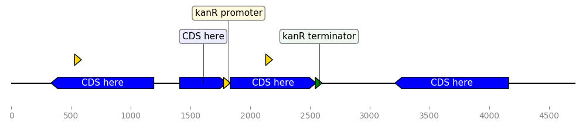
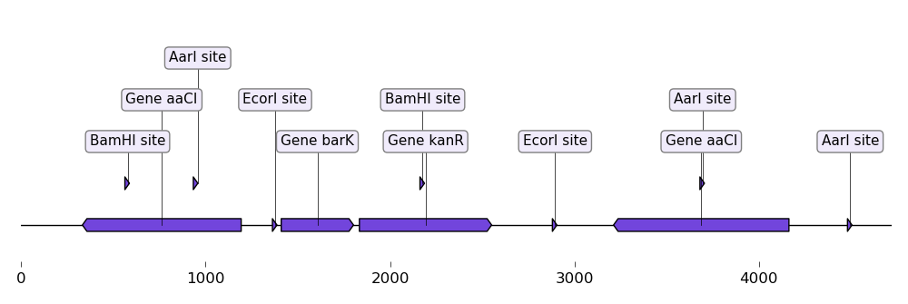
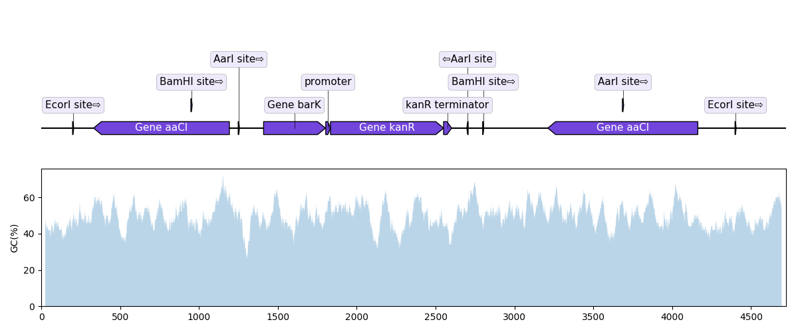
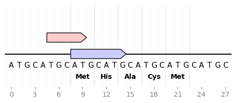
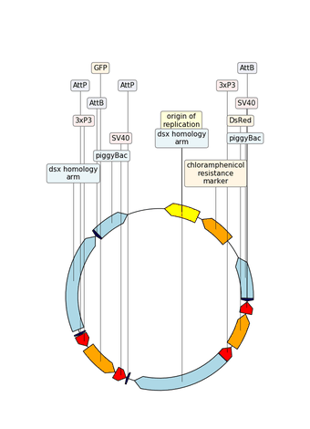

Examples¶


Custom Biopython record translator¶
from dna_features_viewer import BiopythonTranslator
class MyCustomTranslator(BiopythonTranslator):
"""Custom translator implementing the following theme:
- Color terminators in green, CDS in blue, all other features in gold.
- Do not display features that are restriction sites unless they are BamHI
- Do not display labels for restriction sites.
- For CDS labels just write "CDS here" instead of the name of the gene.
"""
def compute_feature_color(self, feature):
if feature.type == "CDS":
return "blue"
elif feature.type == "terminator":
return "green"
else:
return "gold"
def compute_feature_label(self, feature):
if feature.type == 'restriction_site':
return None
elif feature.type == "CDS":
return "CDS here"
else:
return BiopythonTranslator.compute_feature_label(self, feature)
def compute_filtered_features(self, features):
"""Do not display promoters. Just because."""
return [
feature for feature in features
if (feature.type != "restriction_site")
or ("BamHI" in str(feature.qualifiers.get("label", '')))
]
graphic_record = MyCustomTranslator().translate_record("example_sequence.gb")
ax, _ = graphic_record.plot(figure_width=10)
ax.figure.tight_layout()
ax.figure.savefig("custom_biopython_translator.png")

Load a graphic record from Genbank¶
from dna_features_viewer import BiopythonTranslator
graphic_record = BiopythonTranslator().translate_record("example_sequence.gb")
ax, _ = graphic_record.plot(figure_width=10, strand_in_label_threshold=7)
ax.figure.tight_layout()
ax.figure.savefig("from_genbank.png")

Plot sequence with GC content plot¶
"""In this example we plot a record's annotations on top of the curve of the
local GC content in the record's sequence.
"""
import matplotlib.pyplot as plt
from dna_features_viewer import BiopythonTranslator
from Bio import SeqIO
import numpy as np
def plot_local_gc_content(record, window_size, ax):
"""Plot windowed GC content on a designated Matplotlib ax."""
def gc_content(s):
return 100.0 * len([c for c in s if c in "GC"]) / len(s)
yy = [
gc_content(record.seq[i : i + window_size])
for i in range(len(record.seq) - window_size)
]
xx = np.arange(len(record.seq) - window_size) + 25
ax.fill_between(xx, yy, alpha=0.3)
ax.set_ylim(bottom=0)
ax.set_ylabel("GC(%)")
record = SeqIO.read("example_sequence.gb", "genbank")
translator = BiopythonTranslator()
graphic_record = translator.translate_record(record)
fig, (ax1, ax2) = plt.subplots(2, 1, figsize=(12, 5), sharex=True)
ax, levels = graphic_record.plot()
graphic_record.plot(ax=ax1, with_ruler=False, strand_in_label_threshold=4)
plot_local_gc_content(record, window_size=50, ax=ax2)
fig.tight_layout() # Resize the figure to the right height
fig.savefig("with_gc_plot.png")

Sequence nucleotides and translation¶
from dna_features_viewer import GraphicFeature, GraphicRecord
record = GraphicRecord(sequence="ATGCATGCATGCATGCATGCATGCATGC", features=[
GraphicFeature(start=5, end=10, strand=+1, color='#ffcccc'),
GraphicFeature(start=8, end=15, strand=+1, color='#ccccff')
])
ax, _ = record.plot(figure_width=5)
record.plot_sequence(ax)
record.plot_translation(ax, (8, 23), fontdict={'weight': 'bold'})
ax.figure.savefig('sequence_and_translation.png', bbox_inches='tight')

Example with GIF¶
"""An example with GIF generation at the end. How cool is that!
This example requires the Moviepy library installed (pip install moviepy).
"""
from Bio import Entrez, SeqIO
import moviepy.editor as mpe
from moviepy.video.io.bindings import mplfig_to_npimage
import matplotlib.pyplot as plt
from dna_features_viewer import BiopythonTranslator, CircularGraphicRecord
# DOWNLOAD THE PLASMID's RECORD FROM NCBI
handle = Entrez.efetch(
db="nucleotide", id=1473096477, rettype="gb", retmode="text"
)
record = SeqIO.read(handle, "genbank")
# CREATE THE GRAPHIC RECORD WITH DNA_FEATURES_VIEWER
color_map = {
"rep_origin": "yellow",
"CDS": "orange",
"regulatory": "red",
"misc_recomb": "darkblue",
"misc_feature": "lightblue",
}
translator = BiopythonTranslator(
features_filters=(lambda f: f.type not in ["gene", "source"],),
features_properties=lambda f: {"color": color_map.get(f.type, "white")},
)
translator.max_line_length = 15
graphic_record = translator.translate_record(
record, record_class=CircularGraphicRecord
)
graphic_record.labels_spacing = 15
# ANIMATE INTO A GIF WITH MOVIEPY
duration = 5
def make_frame(t):
top_nucleotide_index = t * graphic_record.sequence_length / duration
graphic_record.top_position = top_nucleotide_index
ax, _ = graphic_record.plot(figure_width=8, figure_height=11)
ax.set_ylim(top=2)
np_image = mplfig_to_npimage(ax.figure)
plt.close(ax.figure)
return np_image
clip = mpe.VideoClip(make_frame, duration=duration)
small_clip = clip.crop(x1=60, x2=-60, y1=100, y2=-100).resize(0.5)
small_clip.write_gif("example_with_gif.gif", fps=15)
